Следите за обновлениями программы!
Следите за обновлениями программы!
Программа находится в стадии активной разработки и тестирования.
* Для пользователей вне г. Поставы приложение автоматически запускается в демонстрационном режиме на базовых тестовых координатах.
Внимание: Данное расписание взято из открытых публичных источников. Разработчик не несет ответственности за возможные неточности в графике движения транспорта или задержки рейсов.